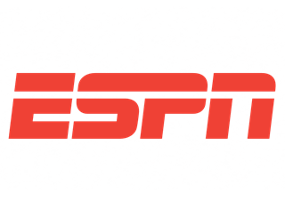

ESPN es un canal de televisión por suscripción latinoamericano de origen estadounidense especializado en deportes, es propiedad de ESPN Inc. y es operado por The Walt Disney Company Latin America, disponible a lo largo de toda América Latina.